1. Write in figures, four hundred thousand two thousand and eighty nine
C). 4002892. What is the place value of digit 3 in 134927?
B). Ten thousands3. Round off 9165 to the nearest hundred
D). 92004. Complete the factor tree and find the values of letters Q and R
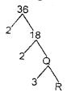
A). Q=9, R=35. Which one of these numbers is divisible by 9?
C). 11616. In a certain district, there are 860 people. 1⁄4% of the people are children How many adults are there?
D). 6457. Name the angle drawn below
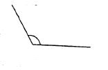
B). obtuse angle8. Find the sum of all prime numbers between 40 and 60.
A). 1969. What is the L.C.M of 18, 24 and 40?
B). 36010. Simplify 36⁄60 to its simplest form
D). 3⁄511. Work out:
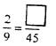
C). 1012. Change 45⁄100 into a decimal
A). 0.4513. A school bought 36 cartons of milk. Each carton contained 450 packets of milk. How many packets of milk did the school buy?
B). 1620014. Work out: 6⁄7 - 2⁄3 =
C). 4⁄2115. What is the next number in the pattern?
13, 17, 19, 23, ____
B). 2516. Find the G.C.D. of 12. 18 and 24
B). 617. Change 31⁄14 into an improper fraction
D). 43⁄1418. Express 0.45 as a fraction and simplify
D). 9⁄2019. A bus carried 960 people in 30trips. How many people did it carry per trip if it carried the same number of people every trip?
A). 3220. Add 9.62 + 10.57 + 11.13
B). 31.3221. Find the perimeter of the figure below
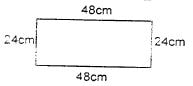
A). 144m22. How many 1⁄4 litre bottles can be used to fill a 121itre bottle'
C). 4823. Add: 31620 + 41512 + 219 =
D). 7335124. What is 0.08m in cm
B). 8cm25. Work out: 316 x 24 =
D). 758426. Find the area of the square below in square units
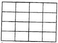
C). 1627. Convert 885 cents into shillings and cents
A). sh.8 85cts28. Multiply:
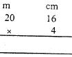
B). 80m 64cm29. What is 1⁄4 of 144?
D). 3630. Divide:
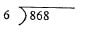
A). 144 rem 431. Add:
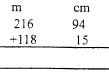
B). 335m 9cm32. Multiply four and a quarter by eight
A). 3433. How many small cubes make the stack below?
B). 9634. Add 21⁄4 hours to 41⁄2 hours and give your answer in minutes
C). 40535. Convert 2⁄4 into a decimal
A). 0.536. How many groups of 100 are there in 900000?
B). 900037. An athlete began his morning exercise at the time shown on the clock below and ended it after 11⁄2 hours. At what time did he end the exercise?
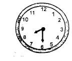
C). 10.00am38. What is 1⁄2 x 98?
C). 4939. How many days were there in the months of January, February and March in the year 2014?
D). 9040. A pair of shoes costs sh.750. Amina bought five such pairs. How much money did she pay?
A). sh.375041. Work out:
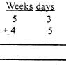
B). l0wks l day42. In a basket, there were y oranges p oranges went bad. How many good oranges were left?
C). y - p43. How many hours are there in 3000 minutes?
D). 50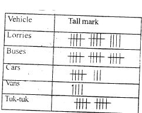
44. Which type of vehicle was least counted?
B). Vans45. How many more cars than vans were counted?
B). 446. How many vehicles were counted altogether?
D). 5147. Multipy: 0.6 x 9
D). 5.448. Subtract: 7⁄8 - 2⁄5
A). 19⁄4049. Which one of the following is NOT a prime number?
B). 5750. What is the next shape in the pattern below ?
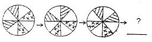
C).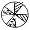